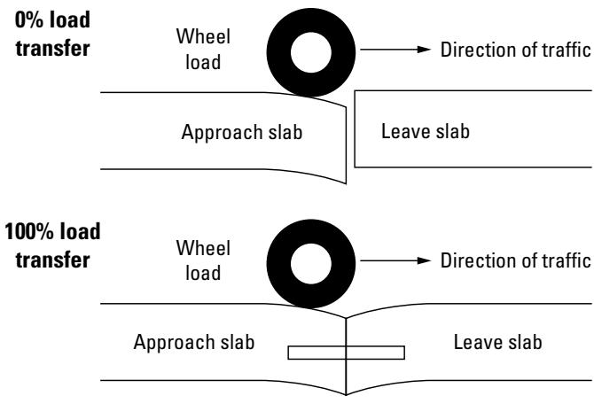
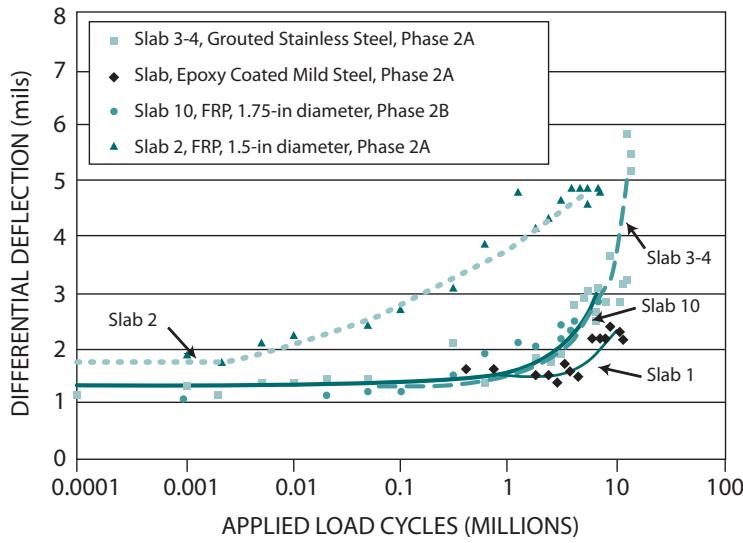
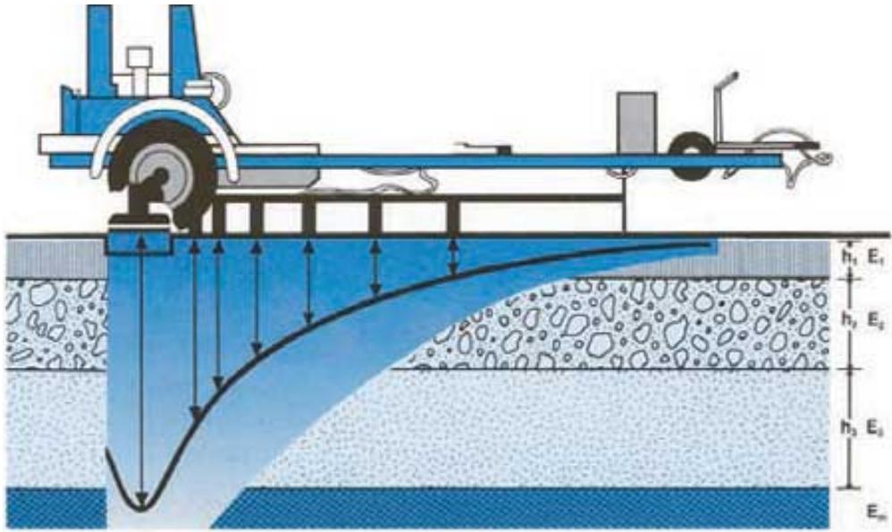
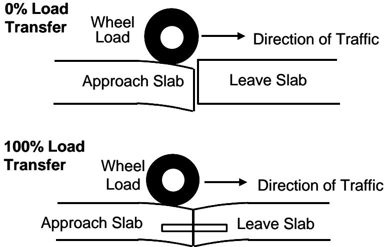
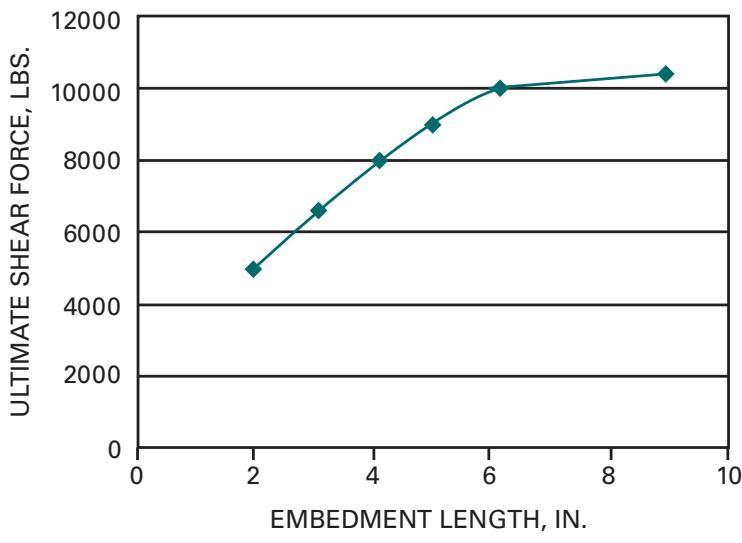
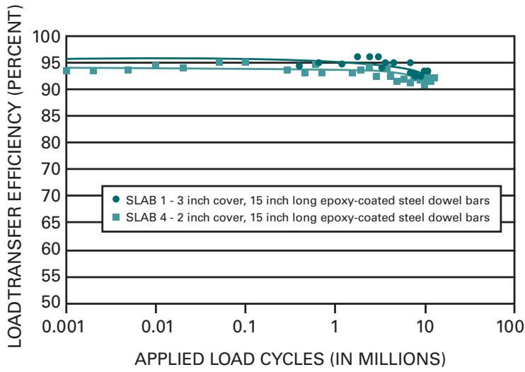

Load Transfer Efficiency Measurement
Load‑transfer efficiency (LTE) measurement is a field evaluation technique applied to jointed Portland‑cement concrete pavements to quantify how effectively wheel loads are shared across transverse joints or cracks[3][4]. It is performed with a falling‑weight deflectometer that applies a simulated wheel load—typically about 9,000 lb—directly over the critical dowel while vertical deflections on the loaded and adjacent unloaded sides of the joint are recorded; LTE is calculated as the ratio of the unloaded‑side deflection to the loaded‑side deflection expressed as a percentage[5][10][13]. The test must be conducted under cool slab temperatures (≤70 °F or 21 °C) and preferably in the early morning when joints are not tightly closed, with sensors placed as close to the joint as possible and the lower side value used as the representative efficiency[3][9]. Measured LTE values are compared against performance thresholds—generally 50–70 % for short‑term adequacy, about 85 % for long‑term service, and ≤60 % together with faulting or differential‑deflection limits to trigger dowel‑bar retrofit—providing a quantitative basis for pavement‑management decisions[3][4][10][13].
Sources (14)
Purpose and investigation objectives
The investigation evaluates the load‑transfer capability of concrete pavement transverse joints (or cracks) under the existing structural, material, subgrade and environmental conditions, quantifying how well adjacent slabs share wheel loads across the joint and, when present, focusing on the dowel‑supported portion. Testing is performed with a falling‑weight deflectometer (or equivalent device) at cool ambient temperatures—generally below 70 °F (21 °C)—and preferably in the early morning so that joints are not tightly closed; sensors are placed as close to the joint as possible on both sides and the lowest LTE value is used. The investigation must answer a series of questions: 1) What is the measured deflection‑based LTE for each side of the joint, and which side yields the lowest percentage? 2) Does the LTE meet accepted performance thresholds (guidance ranges from roughly 50–70 % minimum, about 50–60 % in some sources, to ≥85 % in others)? 3) Were testing conditions within prescribed limits (temperature below 70 °F/21 °C, early‑morning, joints open)? 4) Do the results satisfy differential deflection and peak corner deflection limits (DD ≤ 5 mils or 0.13 mm; peak corner ≤ 25 mils)? 5) Is joint faulting within the acceptable range (>0.10 in to <0.25 in, with some sources citing 0.12–0.5 in) and are differential deflections ≥0.01 in indicative of concern? 6) Are multiple‑crack conditions present (more than about ten percent of slabs showing multiple cracks or third‑stage cracking above 2 %) that would suggest a retrofit need? 7) Which joint‑system attributes—such as dowel diameter, embedment depth, concrete cover, bearing stress, subgrade reaction, moisture‑induced erosion, or foundation condition—most influence the LTE value? 8) If LTE is below threshold, what remedial actions (dowel replacement, improved support, other retrofits) are required? [3][4][9][10][13]
The following figure illustrates the recommended sensor placement for conducting these deflection tests at jointed concrete pavement locations.
 Recommended deflection testing locations for jointed concrete pavements. [13]
Recommended deflection testing locations for jointed concrete pavements. [13]
The figure illustrates a schematic of a jointed concrete pavement showing the recommended spacing and specific placement points for field evaluation tests. It identifies “Basin testing” locations at mid-slab intervals and “Load-transfer testing” locations positioned specifically on the approach and leave sides of transverse joints to quantify load sharing. This visualizes the physical setup required for Load Transfer Efficiency Measurement by showing where sensors are placed relative to joints and traffic flow.
[3] — Additional Resources (pp. 24–26), App. C (pp. 29–30), App. D (pp. 31–32), App. F (pp. 36–39), Longitudinal Translation (pp. 14–15), Vertical Translation (p. 14); [4] — Dowel Bar Retrofit (pp. 76–77); [9] — Ch. 4 (pp. 244–245); [10] — Ch. 3 (pp. 54–55), Ch. 8 (pp. 187–189); [13] — Ch. 3 (p. 52), Ch. 8 (pp. 160–161)
“Load‑transfer efficiency (LTE) measurements give engineers a quantitative basis for every stage of pavement management.” “Load‑transfer efficiency measurements obtained with a falling weight deflectometer give engineers a quantitative trigger for maintenance and rehabilitation actions; when the measured efficiency drops below roughly fifty to sixty percent, or when joint faulting exceeds the 0.12–0.5 in. range, the pavement is identified as a strong candidate for dowel‑bar retrofit despite having adequate structural capacity.” “Deflection‑based FWD testing provides clear action thresholds: values below the typical 50 %–70 % range (or below a more conservative 85 % level) together with differential deflections greater than 0.13 mm (5 mils) or peak corner deflections exceeding about 20–25 mils trigger dowel retrofit, undersealing, joint replacement, or patching.” “The measured load‑transfer efficiency provides a quantitative indicator of how well a joint or crack is sharing traffic loads; values classified as excellent (90 % to 100 %), good (75 % to 89 %) or poor (25 % to 49 %) can be directly used to decide whether the existing dowel system and joint design are adequate or require repair.” “When LTE is high but corner deflections are large, the accompanying differential deflection (DD) calculation—limited to 0.13 mm (5 mils)—alerts maintenance crews to potential pumping or faulting even though load transfer appears adequate, guiding targeted rehabilitation actions.” “Falling weight deflectometer testing performed under cool slab temperatures yields quantitative load‑transfer efficiency values that can be directly tied to pavement performance decisions; when the measured LTE is low but joint deflections are also small, engineers infer a low faulting risk and may defer intervention, whereas high LTE combined with large joint deflection differentials signals an elevated faulting risk that justifies maintenance or redesign actions.” “The presence of a joint whose LTE falls at 85 percent or less, or whose panel‑to‑panel deflection difference exceeds 0.13 mm within five years, flags inadequate long‑term performance and triggers planning for rehabilitation or upgraded dowel detailing.” “Because the AASHTO MEPDG faulting models incorporate LTE directly into differential energy (DE) calculations, engineers can use LTE results to forecast where transverse joint faulting and pumping are likely, select slab thickness, dowel diameter, bearing stress, drainage type, joint spacing, and base conditions that keep DE low, and prioritize maintenance actions when LTE declines.” “The measured LTE also drives material selection: metallic dowels retain high LTE while FRP or GFRP dowels exhibit higher overall and differential deflections, lower initial LTE, and a faster loss of efficiency, indicating that corrosion‑resistant steel or stainless‑clad dowels should be specified for new construction and that FRP dowels require larger diameters, tighter spacing, or superior subgrade support.” “These thresholds allow planners to prioritize retrofits, schedule slotting and dowel installation, and decide on follow‑up actions such as diamond grinding, thereby directing resources to sections where loss of load transfer would otherwise lead to joint faulting and slab cracking.” [3][4][9][10][13]
The following figure illustrates the underlying deflection load transfer concept that informs these efficiency measurements and maintenance thresholds.

Schematic comparison of deflection load transfer at a pavement joint under zero and perfect efficiency conditions. [10]The figure illustrates the concept of deflection load transfer by comparing two scenarios: one with no load transfer where the unloaded side experiences no deflection, and another with perfect load transfer where both sides experience equal deflection under wheel loading. Visually, the top panel depicts a gap between the slabs with no mechanical connection and zero percent efficiency, while the bottom panel shows dowel bars bridging the joint to achieve one hundred percent load transfer.
[3] — Additional Resources (pp. 24–26), App. C (pp. 29–30), App. D (pp. 31–32), App. F (pp. 36–39), Dowel Bar Material (p. 20), Longitudinal Translation (pp. 14–15), Vertical Translation (p. 14); [4] — Dowel Bar Retrofit (pp. 76–77); [9] — Ch. 4 (pp. 244–245); [10] — Ch. 3 (pp. 54–55), Ch. 8 (pp. 187–189); [13] — Ch. 8 (pp. 160–162)
Scope and applicability
The guides agree that load‑transfer efficiency (LTE) measurement is intended for concrete pavements with transverse joints or cracks—specifically “jointed Portland‑cement concrete pavements that employ dowel bars to transfer load across transverse joints” and “concrete slab pavements that contain joints or cracks”. It is applied when the pavement is structurally adequate but shows poor load‑transfer performance, such as “faulting in the range of about 0.12 to 0.5 in.”, “faulting greater than 2.5 mm (0.10 in) but less than 6 mm (0.25 in)”, “high corner deflections”, “pumping of the base course”, or “emerging corner breaks”. Reported trigger thresholds include “deflection‑based load‑transfer efficiency of about sixty percent or less”, “deflection‑based LTE values are at or below about 60 % (or overall transfer below roughly 70 %)”, and a joint with “a LTE of 85 percent or less” together with “a deflection difference between the panels greater than 0.13 mm (5 mils) in 5 years”. Additional criteria are “fewer than ten percent of slabs contain multiple cracks” and “differential deflection of 0.25 mm (0.01 in)”.
The method is appropriate for pavements that rely on mechanical load‑transfer devices—“both steel and FRP dowels; material selection must consider site corrosion potential”—and also where dowels are missing, aggregate interlock is poor, or “erosion of the supporting layers” is suspected. Suitability depends on “dowel placement tolerances, embedment length, concrete cover, joint width, slab thickness, base type, subgrade reaction, and foundation condition”. Acceptable dowel configurations may have reduced cover: “useful even with reduced cover or short embedments down to about two inches, provided the concrete cover exceeds two inches and shear capacity is retained.”
Testing should be performed under cool conditions: “slab temperature at or below 70 °F”, “performed under cooler ambient conditions (below about 21 °C) and early in the morning when joints are not tightly closed”, with “minimal curling, and a stable foundation”. The preferred device is a “Falling Weight Deflectometer” applied to both sides of the joint.
LTE measurement is not recommended for sections that already exhibit extensive slab cracking, joint spalling, or moisture‑related distresses such as “alkali‑silica reactivity or D‑cracking”, because the underlying concrete is unsound. [3][4][9][10][13]
[3] — Additional Resources (pp. 24–26), App. C (pp. 29–30), App. D (pp. 31–32), App. F (pp. 36–39), Longitudinal Translation (pp. 14–15), Vertical Translation (p. 14); [4] — Dowel Bar Retrofit (pp. 76–77); [9] — Ch. 4 (pp. 244–245); [10] — Ch. 3 (pp. 54–55), Ch. 8 (pp. 187–189); [13] — Ch. 3 (p. 52), Ch. 8 (pp. 160–162)
The guides note that load‑transfer‑efficiency (LTE) derived from falling‑weight‑deflectometer (FWD) tests is convenient but its reliability is constrained by several inherent limitations. Deflection values (and, therefore, computed load transfer values) are affected by many factors, including pavement structural parameters … and environmental conditions, so LTE can be highly sensitive to slab size, support conditions, joint opening, dowel design, aggregate shape, foundation support, and the presence of mechanical devices. In addition, different LTE values may be obtained depending on which side of the joint is loaded, and temperatures will significantly affect the results; consequently it is generally recommended that load transfer testing be conducted at temperatures below 70°F (or below about 21 °C) and preferably early in the morning before joints close. When slab deflections are only a few mils, accurately establishing the LTE of pavements with very low deflection values can be challenging as error in the measurement may affect the calculated results, which may produce misleadingly high LTE even though corner movements are excessive – it is possible for slab corners to exhibit very high deflections, yet still maintain a high LTE. Moreover, high values may appear on poorly supported slabs with large overall deflections, while low values may occur on well‑supported slabs where actual stresses are low, and stress transfer efficiency often lags far behind the computed deflection LTE (e.g., a 60 % deflection LTE may correspond to only about 20 % stress LTE).
Because LTE alone does not quantify stress transferred across a joint nor reveal loss of support, the guides advise using complementary investigations whenever the LTE values approach typical action limits or when testing conditions could bias results. When LTE values approach typical action limits (50–70 %) or when testing conditions (e.g., slab temperature above 70 °F, significant curling) could bias results, a complementary assessment is required. Situations that trigger additional evaluation include: LTE ≤85 % or a deflection difference between panels greater than 0.13 mm within five years; large differential deflection – DD should be computed along with the LTE over the entirety of a project to gain a more complete understanding; suspected voids – falling weight deflectometer testing can be performed at suspected void locations to help determine if loss of support exists.; and any ambiguity revealed by visual inspection. In such cases, the recommended complementary methods are: measurement of maximum and differential slab deflections (the magnitude of the deflections should be considered in addition to the LTE), direct stress‑transfer assessments where feasible, targeted FWD‑derived void detection – along with visual inspection, you can use deflection data from the FWD testing to locate voids., and a thorough visual survey. [3][9][10][13]
The following figure illustrates how falling weight deflectometer data can be utilized to detect voids as part of these complementary assessments.
 the figure.11: Void detection plot using FWD data [10]
the figure.11: Void detection plot using FWD data [10]
It plots FWD load in kips against corner deflection in mils for two distinct locations labeled ‘Approach’ and ‘Leave’.
[3] — App. C (pp. 29–30); [9] — Ch. 4 (pp. 244–245); [10] — Ch. 3 (pp. 54–55), Ch. 8 (pp. 187–188); [13] — Ch. 8 (pp. 160–161)
Existing information and records
The review should begin by gathering all existing performance and traffic records that quantify load‑transfer efficiency for dowel‑bar joints. This includes field evaluation data such as FHWA TE‑30 studies (e.g., the Illinois 2004 evaluation, Iowa five‑year monitoring, Wisconsin early deflection testing) and long‑term laboratory fatigue results (e.g., West Virginia University tests). Traffic loading histories that describe simulated heavy‑truck cycles or actual axle counts should also be collected.
Condition surveys must provide detailed measurements of joint geometry—joint width, dowel diameter, spacing—and foundation quality, slab thickness, and observed distresses such as spalling, delamination, floating slabs, D‑cracking, and panel cracking. Faulting values, differential‑deflection readings, and deflection‑based LTE numbers are required to compare against accepted thresholds. The guides specify that a slab is considered a candidate when its “Deflection load transfer of 60% or less”, faulting exceeds “faulting greater than 0.10 in. but less than 0.25 in.” (or the equivalent metric of 2.5 mm to 6 mm), and differential deflections are at least “differential deflections of 0.01 in. or more”.
Maintenance histories should document all dowel installations, replacements, retrofits, or other joint repairs, together with dates and the nature of the work, so that changes in LTE can be correlated over time.
Additional performance information includes age of the concrete, crack‑type statistics (e.g., third‑stage cracking percentages), coring results confirming sound concrete through depth, ride‑quality indices such as IRI, and inventories of panels with multiple cracks. These data together establish whether the pavement meets the typical criteria for dowel‑bar retrofit. [3][10][13]
[3] — App. F (pp. 36–39); [10] — Ch. 8 (pp. 188–189); [13] — Ch. 8 (pp. 161–162)
The guides collectively identify several record gaps that can only be resolved by systematic field investigation. First, the existing data do not clarify how dowel vertical translation and shallow concrete cover affect load‑transfer efficiency; the often‑cited 3.5‑times‑diameter cover rule lacks validation under real traffic loads, and laboratory observations of a sharp stiffness loss when embedment falls to three inches or less have never been confirmed in the field. Second, long‑term performance information for non‑metallic dowels (FRP/GFRP) is missing; their lower stiffness appears to produce higher deflections and a faster loss of efficiency, yet there are no records beyond 20 years or guidance on whether larger diameters or altered spacing can mitigate these effects. Third, the records frequently omit critical testing conditions: side‑dependent LTE values are not consistently documented, temperature control is rarely recorded despite its strong influence on results, and low‑deflection measurements often suffer from error that can dominate calculated efficiencies. In addition, corner deflections—an indicator of underlying support problems such as voids—are seldom reported, making it difficult to correlate LTE with joint support quality. Finally, the sensitivity of LTE to environmental variables (temperature, moisture gradients, support conditions) calls into question the reliability of a single LTE threshold; low LTE may coexist with acceptable deflection performance and vice‑versa. Consequently, field programs must capture side‑loading consistency, ambient temperature, precise low‑deflection data, corner deflection magnitudes, dowel bearing stresses, and joint‑deflection criteria, and they should develop validated action thresholds for both LTE (e.g., 50–70 %) and differential deflection (≈0.13 mm). [3][10][13]
The following figure illustrates how differential deflection varies across several dowel materials and diameters under these testing conditions.

Differential deflection (loaded side of joint minus unloaded side of joint) for several dowel materials and diameters (7.5 in. PCC slab, 12 in. dowel spacing) [3]The figure plots differential deflection against applied load cycles to evaluate the fatigue performance of various dowel systems. The results demonstrate that non-metallic dowels exhibit higher deflections and a faster loss of efficiency compared to steel dowels.
[3] — App. C (pp. 29–30), App. D (pp. 31–32), App. F (pp. 36–39), Dowel Bar Material (p. 20), Longitudinal Translation (pp. 14–15), Vertical Translation (p. 14); [10] — Ch. 3 (pp. 54–55); [13] — Ch. 3 (p. 52)
Visual inspection and condition assessment
During LTE measurement, inspectors should visually screen for any transverse joint faulting or vertical displacement (“faulting”) at slab edges, especially when differential panel deflections exceed the recommended limits. Joint faulting that manifests as differential panel deflections of 0.12–0.5 in. (or greater than 2.5 mm but less than 6 mm) and corner deflections above 20‑25 mil are red flags. Slab cracking, including multiple cracks in more than about ten percent of slabs, working or corner cracks, and D‑cracking, should be noted. Corner breaks and moisture‑driven erosion of the base or subgrade that produce pumping of the underlying base‑course material are also indicative of poor load transfer. Concrete spalling, cracking, horizontal delamination, or joint spalling adjacent to dowel bars—especially when accompanied by apparent dowel looseness—must be recorded. Excessive differential deflection across a loaded joint or crack (greater than 5 mil/0.13 mm) and any erosion of the base, subbase, or subgrade further diminish LTE. Finally, significant slab cracking, pronounced spalling, or alkali‑silica reaction (MRD) signal that the section may be unsuitable for dowel retrofit. [3][4][9][10][13]
[3] — Additional Resources (pp. 24–26), App. C (pp. 29–30), App. D (pp. 31–32), App. F (pp. 36–39), Longitudinal Translation (pp. 14–15), Vertical Translation (p. 14); [4] — Dowel Bar Retrofit (pp. 76–77); [9] — Ch. 4 (pp. 244–245); [10] — Ch. 3 (pp. 54–55), Ch. 8 (pp. 187–189); [13] — Ch. 8 (pp. 160–162)
The guides require that load‑transfer efficiency be measured on both sides of each joint or crack, using the lower LTE value as the representative figure, and that testing be performed when pavement temperature is below 70 °F. The resulting LTE percentage is placed into one of five severity bands—Excellent (90–100 %), Good (75–89 %), Fair (50–74 %), Poor (25–49 %) or Very Poor (0–24 %). Distresses are first categorized by type—structural slab cracking, joint spalling, D‑cracking, faulting, third‑stage cracking—and then severity is assigned using quantitative limits such as load transfer ≤60 %, faulting between 0.10 in. and 0.25 in., and differential deflection thresholds (≤5 mils or ≥0.01 in., at least 0.25 mm). The evaluator also records peak corner deflection (≤25 mils) to document potential faulting or pumping. Extent is expressed either as a percentage of the affected area or number of panels (e.g., less than 2 % up to 5 % third‑stage cracking) or, alternatively, as a proportion of panels with multiple cracks not exceeding ten percent. Every measured value together with its precise pavement location is entered into the field log so that type, severity, extent, and location can be compared against retrofit selection thresholds and used for repair planning. [10][13]
[10] — Ch. 3 (pp. 54–55), Ch. 8 (pp. 188–189); [13] — Ch. 8 (pp. 161–162)
Field measurements and testing
“The most common way to evaluate joint load transfer efficiency is through the use of a Falling Weight Deflectometer (FWD).” This nondestructive test applies a simulated wheel load at the critical dowel location and records vertical deflections on both the loaded side (ΔL) and the adjacent unloaded side (ΔUL) of the joint. “Deflection-based load transfer efficiency (LTE) is most commonly computed as: LTE (%) = 100 Δ_{UL} / Δ_{L}, providing a quantitative measure of how effectively load is transferred across the joint.” The same data set also yields peak loaded‑side deflection and differential deflection (ΔL − ΔUL), which are examined to identify excessive slab movement, dowel looseness, or potential delamination.
Testing should be performed under cool conditions: “It is generally accepted that concrete pavement joint load transfer testing should be conducted only when the slab temperature is 70°F or less…” and sensors must be placed as close to the joint as possible, preferably in the outer wheel path, early in the morning when joints are not tightly closed.
Beyond LTE, the FWD provides additional nondestructive indicators. It can produce an effective dynamic k‑value that reflects pavement stiffness (e.g., 325 psi/in) – “The FWD provides a deflection‑based LTE value for representative joints or cracks, which in the cited case averaged about 85 %, and it also yields an effective dynamic k‑value that reflects pavement stiffness (reported as 325 psi/in).” Differential deflection is reported as the absolute difference between sides; “differences of 0.01 in or more denote poor interlock.” When combined with an estimate of subgrade reaction modulus (k), practitioners compute differential energy (DE); “The DE metric quantifies elastic‑energy imbalance; higher DE values signal increased risk of moisture pumping, base loss, and progressive fault development.” Corner‑to‑interior foundation‑support ratios derived from the same test identify non‑uniform support when ratios fall below 0.75, and extrapolating the load‑deflection line toward the origin helps locate subsurface voids – “a line that projects close to the origin (within ~2 mils) suggests full support.”
Complementary field measurements include joint faulting. “In practice, engineers also measure joint faulting—vertical displacement of the joint face—to identify sections where the measured fault exceeds the 0.12‑to‑0.5 in range, a condition that often correlates with low LTE (below about 50–60 percent) and signals the need for dowel retrofit.” Faulting values greater than about 2.5 mm (0.10 in) but less than 6 mm (0.25 in) indicate loss of continuity, and faulting exceeding 0.10 in but remaining under 0.25 in warrants attention.
Full‑scale repeated‑load testing on doweled slabs subjects the joint to millions of simulated wheel loads (≈9,000 lb). “The resulting LTE trend over cycles reveals degradation or loosening of the dowel system with traffic exposure, indicating long‑term performance loss.” Joint faulting measurements—vertical displacement across the joint under load—serve as a complementary indicator that can be correlated with LTE values to assess differential movement.
Ride quality may be corroborated by the International Roughness Index (IRI); “IRI levels between 2.3 and 3.2 m/km (150–200 in/mi) together with low LTE (<60 %) reinforce a deteriorating joint condition.” Together, these nondestructive tests, measurements, and evaluation methods provide a comprehensive picture of how well loads are transferred across pavement joints and the functional health of dowel systems. [3][4][5][9][10][13]
[3] — Additional Resources (pp. 24–26), App. C (pp. 29–30), App. D (pp. 31–32), App. F (pp. 36–39), Longitudinal Translation (pp. 14–15), Vertical Translation (p. 14); [4] — Dowel Bar Retrofit (pp. 76–77); [5] — 1. Introduction (p. 47); [9] — Ch. 4 (pp. 244–245); [10] — Ch. 3 (pp. 54–55), Ch. 8 (pp. 187–189); [13] — Ch. 3 (p. 52), Ch. 8 (pp. 160–162)
The equipment prescribed for load‑transfer efficiency testing is a falling‑weight deflectometer (FWD) – “the most common method for measuring load transfer efficiency … is by using a falling weight deflectometer (FWD)” – and, for laboratory or full‑scale repeated‑load programs, a loading device capable of applying a simulated 9,000 lb wheel load repeatedly – “Full‑scale repeated‑load testing performed at the University of Minnesota uses a loading device that applies a simulated 9,000 lb wheel load repeatedly”. The test configuration requires the load plate to be positioned over the critical dowel – “Falling Weight Deflectometer (FWD) is employed, placing its load plate directly over the critical dowel” and “The device applies a load over the critical dowel, which is typically the outside dowel and measures the deflections on each side of the pavement joint”. Deflection sensors are placed as close to the joint or crack as possible and evenly spaced on each side – “Deflection measurements for the determination of LTE should be taken with sensors placed as closely to the joint or crack as possible and evenly spaced on either side”. Dowel spacing guidelines state that “1.5 in. FRP dowels should be spaced no more than 7.5 in. apart”, while joint width is noted as a factor influencing efficiency – “joint widths increased from 0.25 in. to 0.4 in., … LTE values dropped”. The guides do not prescribe a testing frequency, noting only that the source does not specify how often such tests should be performed. Site and environmental conditions governing testing are consistent: measurements must be made when slab temperature is ≤70 °F – “it is generally accepted that concrete pavement joint load transfer testing should be conducted only when the slab temperature is 70°F or less” and preferably in early morning before joints close tightly – “LTE should be measured during cooler temperatures (ambient temperatures of less than 70°F) and during the early morning when the joints are not tightly closed”. Testing should also avoid periods when the slab is significantly curled upward – “testing should not be done during times when the slab is significantly curled upward.” [3][9][10]
The following figure illustrates a practical application of these measurement protocols.

Schematic of a falling-weight deflectometer measuring load transfer efficiency across a jointed concrete pavement. [9]The figure depicts a falling weight deflectometer (FWD) positioned over the critical dowel at a transverse joint in a concrete slab to measure deflections on both sides of the crack. Vertical arrows indicate the deflection basins propagating through the pavement layers, illustrating how the applied wheel load transfers stress across the joint into the adjacent unloaded slab.
[3] — App. C (pp. 29–30), App. F (pp. 36–39), Vertical Translation (p. 14); [9] — Ch. 4 (pp. 244–245); [10] — Ch. 8 (pp. 187–188)
Sampling and laboratory investigation
Laboratory evaluation of Load Transfer Efficiency (LTE) should consist of three complementary test programs. First, shear‑capacity tests on single dowel–concrete specimens are performed while varying concrete cover depth and dowel diameter to simulate vertical translation; the results show that “Figure 6 summarizes the results of these studies and shows that the shear capacity of the system exceeds 5,000 lb when the cover over either 1.25 in. or 1.5 in. dowels is greater than 2 in.” These tests also confirm that “Khazanovich et al. further suggest that concrete cover exceeding 3.5 times the dowel diameter … provides no significant increase in shear capacity,” thereby defining the minimum cover needed to sustain design shear loads and identifying loss of load transfer when embedment is insufficient. Second, shear‑pull testing with varying embedment lengths quantifies both ultimate shear capacity and initial stiffness; it was observed that there is “no significant loss of shear capacity until embedment length fell to 4 in.” however, the “initial stiffness of the dowel‑concrete system decreased by 60 percent or more when dowel embedment decreased to 3 in. or less,” linking stiffness reductions to increased differential deflection and faulting potential. Third, repeated‑load fatigue testing replicates millions of heavy‑truck cycles while systematically varying joint width and foundation support; this program evaluates bearing stress, total deflection, joint widening, and deterioration mechanisms such as foundation degradation, cracking or delamination along dowel edges that cause LTE decline. [3]
[3] — App. F (pp. 36–39), Longitudinal Translation (pp. 14–15), Vertical Translation (p. 14)
Structural and functional performance
The measurement program for load‑transfer efficiency (LTE) requires vertical deflection data on the loaded and unloaded sides of each joint or crack, typically obtained with a falling‑weight deflectometer (FWD) under ambient temperatures below 70 °F (≈21 °C). The unloaded‑side deflection divided by the loaded‑side deflection, multiplied by 100, yields the LTE percentage. In addition to the LTE value, a complete program records slab thickness, dowel bearing stress, subgrade reaction (k‑value), peak joint or corner deflection, differential deflection across the joint, and an estimate of joint stiffness or dynamic k‑value. Faulting (vertical displacement) is measured and compared against threshold ranges (e.g., 0.10–0.25 in or 2.5–6 mm). Peak corner deflection targets are typically < 25 mil, and differential deflections are limited to ≤ 5 mil (≥0.01 in). Slab‑to‑slab vertical movement of at least 0.01 in is also recorded. Structural capacity is judged by the LTE percentage (values below about 50–60 % or exceeding ~60 % load transfer loss trigger retrofit), bearing stress, joint stiffness, and faulting magnitude. Functional condition includes the proportion of slabs with multiple cracks (often <10 %) and roughness indices such as IRI (acceptable between 2.3 and 3.2 m/km). [3][4][5][9][10][13]
The following figure illustrates the underlying concept of deflection load transfer.

Illustration of deflection load transfer concept. [13]The figure displays two scenarios comparing the behavior of an approach slab and a leave slab under wheel loading, labeled as “0% Load Transfer” and “100% Load Transfer.” In the top scenario, the unloaded side experiences no deflection when the load is applied to the approach slab. In the bottom scenario, both sides of the joint experience the same magnitude of deflection under the wheel loading.
[3] — Additional Resources (pp. 24–26), App. C (pp. 29–30), App. D (pp. 31–32); [4] — Dowel Bar Retrofit (pp. 76–77); [5] — 1. Introduction (p. 47); [9] — Ch. 4 (pp. 244–245); [10] — Ch. 3 (pp. 54–55), Ch. 8 (pp. 187–189); [13] — Ch. 3 (p. 52), Ch. 8 (pp. 160–162)
The guides agree that load‑transfer efficiency is evaluated with a falling‑weight or FWD test performed in cool weather (below 70 °F) and early‑morning conditions so that the simulated wheel load (~9,000 lb) reflects the traffic loading used in design. Measured LTE values are compared to several design thresholds: an “action” range of 50–70 % for acceptable short‑term performance, a long‑term target near 85 % with differential panel deflection limited to 5 mil (0.13 mm), and a retrofit trigger around 60 % or lower together with faulting exceeding about 0.10 in (2.5 mm) and differential deflections approaching 0.01 in (0.25 mm). Across the sources, conventional carbon‑steel or stainless‑steel dowels routinely achieve LTE above the action range and often meet the 85 % long‑term criterion, indicating that the joints satisfy design assumptions and have sufficient remaining service life. In contrast, field observations in many pavements report LTE at or below the 60 % limit, faulting between 0.10 in and 0.25 in, and differential deflections near the 5‑mil threshold; these conditions fall short of the assumed load‑transfer capacity for the expected traffic volumes and signal a reduced remaining service life unless dowel retrofits are implemented. The performance of alternative materials such as FRP/GFRP dowels is noted to be lower, with LTE often dropping toward 50 % under deteriorating foundation conditions, further underscoring the importance of meeting the established thresholds for long‑term pavement durability. [3][4][9][10][13]
The following figure illustrates the deflection LTE concept that underpins these performance thresholds and measurement criteria.
 Schematic comparison of pavement deflection at a joint under zero versus full load transfer conditions. [10]
Schematic comparison of pavement deflection at a joint under zero versus full load transfer conditions. [10]
The figure illustrates the concept of deflection load transfer by contrasting two scenarios: one where there is no load transfer and another with complete load transfer across a transverse joint between an approach slab and a leave slab. In the zero percent scenario, the loaded side deflects downward while the adjacent unloaded side remains flat, whereas in the 100 percent scenario, both sides deflect together due to the presence of a dowel bar.
[3] — App. C (pp. 29–30), App. D (pp. 31–32), App. F (pp. 36–39), Dowel Bar Material (p. 20), Longitudinal Translation (pp. 14–15), Vertical Translation (p. 14); [4] — Dowel Bar Retrofit (pp. 76–77); [9] — Ch. 4 (pp. 244–245); [10] — Ch. 8 (pp. 187–189); [13] — Ch. 8 (pp. 161–162)
Data interpretation and diagnosis
Load‑transfer efficiency (LTE) assessment relies on a systematic integration of visual inspection, field deflection testing, laboratory shear‑pull evaluation, and long‑term performance observations. Visual observations of dowel looseness or joint faulting serve as early warnings, while quantitative field measurements are obtained with “The most common method for measuring load transfer efficiency, and thus, load transfer loss … is by using a falling weight deflectometer (FWD).” The FWD data are interpreted alongside visual cues (“Along with visual inspection, you can use deflection data from the FWD testing to locate voids”) and compared to performance thresholds such as “A joint with a LTE of 85 percent or less and/or a deflection difference between the panels greater than 0.13 mm (5 mils) in 5 years or less is unlikely to provide adequate long‑term pavement performance.” Laboratory shear‑pull tests demonstrate that dowels “exceeds 5,000 lb when the cover over either 1.25 in. or 1.5 in. dowels is greater than 2 in.” and that “In laboratory shear pull tests of dowels with varying amounts of embedment, Khazanovich et al. found no significant loss of shear capacity until embedment length fell to 4 in., and embedment lengths of as little as 2 in. provided shear capacity of more than 5,000 lb.” However, stiffness reductions become critical when embedment is ≤3 in., influencing differential deflection risk. Performance data from full‑scale repeated‑load testing confirm that “Full‑scale repeated load testing performed at the University of Minnesota confirmed that the reduction of performance associated with reduced dowel cover (vertical translation) was minimal,” and that installations with adequate cover (“concrete cover exceeding 3.5 times the dowel diameter … provides no significant increase in shear capacity”) still achieve “both installations provided good performance and exhibited similar rates of deterioration, although the shallow cover installation had slightly lower LTE values.” Comparative studies show that “Khazanovich et al. (2009) also compared faulting and LTE data for joints with dowels that were placed with their centers within 1/2 in. of the joint versus those placed with more than 2 in. of longitudinal translation,” and “They found no statistically‑significant differences in faulting and LTE between the two groups.” By triangulating these sources—visual cues, FWD‑derived LTE values, laboratory shear capacity, and observed long‑term behavior—engineers can set practical tolerances (e.g., maintain embedment ≥3 in. for stiffness) and use low LTE readings together with total deflection magnitude (“In the analysis of test results, data may indicate low LTE but since the total deflection is small at both the approach and leave side of the joints, the risk of faulting is low”) to prioritize maintenance actions. [3][9]
The relationship between these laboratory findings is illustrated in the figure below, which plots shear capacity against embedment length for 1.5-inch diameter steel dowels.

Shear capacity versus embedment length for 1.5 in. diameter steel dowels [3]The figure plots the ultimate shear force of a dowel against its concrete embedment length, showing that load transfer capacity increases with depth before plateauing.
[3] — Longitudinal Translation (pp. 14–15), Vertical Translation (p. 14); [9] — Ch. 4 (pp. 244–245)
The guides identify several primary mechanisms that can lower measured load‑transfer efficiency. Inadequate dowel design—such as undersized or overly spaced FRP dowels whose elastic modulus is roughly one‑sixth that of steel, insufficient concrete cover, short embedment lengths, and excessive bearing stresses—reduces the stiffness of the dowel‑concrete system and can cause dowel looseness. Weak structural support beneath slab edges and corners, often produced by high deflections together with excess moisture that erodes an erodible base or subbase, also diminishes LTE. Construction‑related defects, notably mis‑placed or mis‑aligned dowel baskets that prevent proper sliding of the joint, further impair load transfer. These factors may be compounded by heavy or repeated axle loads, temperature‑induced joint opening, and long‑term material deterioration such as corrosion, but the dominant causes across the sources are dowel design shortcomings, loss of support, and installation errors. [1][3][4][9][10][12][13]
[1] — Ch. 3 (pp. 105–106); [3] — Additional Resources (pp. 24–26), App. C (pp. 29–30), App. D (pp. 31–32), App. F (pp. 36–39), Dowel Bar Material (p. 20), Longitudinal Translation (pp. 14–15); [4] — Dowel Bar Retrofit (pp. 76–77); [9] — Ch. 4 (pp. 244–245); [10] — Ch. 3 (pp. 54–55); [12] — App. C (pp. 96–123); [13] — Ch. 8 (pp. 161–162)
Findings, confidence, and next actions
Load‑transfer efficiency (LTE) measured from joint deflections offers a quantitative basis for judging how well wheel loads are shared across concrete pavement joints and for classifying joint performance. The guides agree that LTE percentages can be mapped to condition categories ranging from excellent to very poor, enabling practitioners to screen joints for repair and to set maintenance action thresholds. Typical practice uses deflection‑based LTE values derived from falling‑weight or falling‑weight‑deflectometer (FWD) testing; values below roughly fifty to sixty percent are interpreted as evidence of inadequate transfer and trigger dowel‑bar retrofits, especially when faulting exceeds the 0.12–0.5 in range. Action thresholds commonly cited are 50–70 % LTE or a differential deflection greater than 0.13 mm, which serve as decision points for corrective treatment.
However, several limitations and uncertainties temper reliance on LTE alone. The measurement is highly sensitive to testing conditions: ambient temperature (recommended below 70 °F), time of day, and whether the load is applied to one side or the other can cause variability, so both sides should be tested and the lower value used. Because LTE is derived from deflection response, it does not directly reflect peak stresses; high LTE values can occur even when joint deflections are large, while low LTE may appear in slabs that inherently deform very little. Consequently, LTE must be interpreted together with differential‑deflection limits (often 0.13 mm) and observed faulting to avoid misleading conclusions about distress potential. Additional uncertainties arise from the influence of dowel geometry, embedment depth, concrete cover, material stiffness, and foundation conditions—factors that can alter shear capacity and stiffness without being captured by a single LTE reading. The empirical thresholds lack quantified confidence intervals, and long‑term performance data for alternative dowel materials (e.g., FRP/GFRP) remain limited, further constraining predictive certainty. [3][4][5][9][10][13]
The following figure illustrates how concrete cover influences LTE for retrofit steel dowels, highlighting one of the key geometric factors that can alter load transfer efficiency.

Effect of concrete cover on LTE for retrofit 1.5 in. steel dowels in 7.5 in. concrete slabs (after Odden et al. 2003) [3]The figure plots Load Transfer Efficiency as a percentage against the number of applied load cycles to demonstrate how different amounts of concrete cover affect dowel performance. The data indicates that while both configurations maintain high efficiency, the slab with less concrete cover exhibits a slightly lower and more variable load transfer efficiency over time.
[3] — Additional Resources (pp. 24–26), App. C (pp. 29–30), App. D (pp. 31–32), App. F (pp. 36–39), Dowel Bar Material (p. 20), Longitudinal Translation (pp. 14–15), Vertical Translation (p. 14); [4] — Dowel Bar Retrofit (pp. 76–77); [5] — 1. Introduction (p. 47); [9] — Ch. 4 (pp. 244–245); [10] — Ch. 3 (pp. 54–55), Ch. 8 (pp. 187–189); [13] — Ch. 3 (p. 52), Ch. 8 (pp. 160–162)
After an LTE assessment the guides call for a series of follow‑up actions. First, additional testing is required: “deflection‑based load transfer efficiency (LTE) can be computed from FWD test results, and action threshold values typically range from 50 to 70 percent” and all measurements should be made when “the slab temperature is less than 70 °F”. Joint‑deflection surveys must verify that “peak corner deflections ≤25 mils and differential deflections ≤5 mils”; if limits are exceeded, repeat FWD testing at suspected void locations and compute a “corner‑to‑interior support ratio—values below 0.75 indicate non‑uniform support”. Visual inspection for faulting (“faulting between 0.12 and 0.5 in.” or “faulting greater than 2.5 mm (0.10 in) but less than 6 mm (0.25 in)”) and differential movement (“differential deflections of 0.01 in. or more”) should be performed, with slab thickness verified by coring when needed.
Monitoring programs are recommended: the guides advise “establishing a long‑term monitoring program (≥20 years for FRP) that tracks LTE trends” and using sensors placed as close to the joint as possible under cool‑temperature, early‑morning conditions to track LTE and differential deflection over time. Periodic re‑testing after major traffic loads or environmental events is also prescribed.
Design checks must confirm dowel geometry and support: “no significant loss of shear capacity until embedment length fell to 4 in.” and “initial stiffness of the dowel‑concrete system decreased by 60 percent or more when dowel embedment decreased to 3 in. or less”; therefore embedment should meet a minimum three‑inch requirement and cover thickness must be sufficient. For FRP systems, the guides note that “the use of FRP dowels will result in dowel‑concrete bearing stresses that are 50 percent higher and dowel deflections that are about 60 percent higher” and require spacing limits of “1.5 in. FRP dowels should be spaced no more than 7.5 in. apart” and “1 in. FRP dowels should be spaced no more than 4 in. apart” as well as joint‑width control (≤0.25 in.). General design reviews must also verify adequate slab thickness, proper joint spacing, sufficient transverse reinforcement and good aggregate interlock.
When LTE falls below the thresholds – for example “85 percent or less and/or a different deflection greater than 0.13 mm (5 mils) in five years” or “deflection load transfer at or below the 60 % threshold” – corrective actions are prescribed: extend embedment, increase cover, retrofit loose or undersized dowels, apply undersealing, patch cracked joints, replace deteriorated FRP dowels with steel, or perform a full dowel‑bar retrofit. The retrofit procedure is described as “cut and clean slots along the transverse joints (usually only in wheel paths), install dowels anchored to joint inserts, place and cure the repair material, and then finish with diamond grinding if desired”. Additional repairs may include void filling, drainage improvement, cross‑stitching or slot‑stitching, and base erosion repair.
Preservation measures also require checking dowel baskets for “spacing, alignment, proper anchorage, and adequate bond breaker coating” and confirming that “the dowel bars are level and parallel with each other”. Joint surface flatness must be verified with a straightedge (“surface should not deviate more than 1/8 in. in 10 ft”) and cure placement must occur within the specified time frame (“cure placement within 30 minutes after finishing”). These actions together ensure that load‑transfer performance remains within the defined envelope throughout service life. [3][4][9][10][12][13]
[3] — App. C (pp. 29–30), App. D (pp. 31–32), App. F (pp. 36–39), Longitudinal Translation (pp. 14–15); [4] — Dowel Bar Retrofit (pp. 76–77); [9] — Ch. 4 (pp. 244–245); [10] — Ch. 3 (pp. 54–55), Ch. 8 (pp. 187–189); [12] — App. C (pp. 96–123); [13] — Ch. 8 (pp. 161–162)
References
- P. Taylor, T. Van Dam, L. Sutter, and G. Fick, "Integrated Materials and Construction Practices for Concrete Pavement: A State-of-the-Practice Manual," National Concrete Pavement Technology Center, Rep. Part of InTrans Project 13-482; TPF-5(286), 2019. [Online]. Available: https://www.cptechcenter.org/wp-content/uploads/2019/12/IMCP_manual.pdf
- T. L. Cavalline, G. Voigt, J. Stempihar, J. Lafrenz, T. Van Dam, M. Boyle, D. Johnson, and Rohan Reddy Jonna, "Best Practices Manual: Quality Control and Quality Acceptance of Concrete Airport Pavement," University of North Carolina at Charlotte, Rep. ACPTP-2022-4, 2025. [Online]. Available: https://www.cptechcenter.org/wp-content/uploads/2026/03/ACPTP-2022-4_QC_QA_of_concrete_airfield_pvmt_manual_w_cvr_508.pdf
- M. B. Snyder, "Guide to Dowel Load Transfer Systems for Jointed Concrete Roadway Pavements," Institute for Transportation, Iowa State University, 2011. [Online]. Available: https://www.cptechcenter.org/wp-content/uploads/2018/08/Dowel-load-guide.pdf
- S. Garber, R. O. Rasmussen, and D. Harrington, "Guide to Cement-Based Integrated Pavement Solutions," Institute for Transportation, Iowa State University, 2011. [Online]. Available: https://www.cptechcenter.org/wp-content/uploads/2018/08/IPS.pdf
- H. N. Torres, J. Roesler, R. O. Rasmussen, and D. Harrington, "Guide to the Design of Concrete Overlays Using Existing Methodologies," National Concrete Pavement Technology Center, Rep. DTFH61-06-H-00011; Work Plan 13, 2012. [Online]. Available: https://www.cptechcenter.org/wp-content/uploads/2018/08/Overlays_Design_Guide_508.pdf
- T. L. Cavalline, G. J. Fick, and A. Innis, "Quality Control for Concrete Paving: A Tool for Agency and Industry," National Concrete Pavement Technology Center, 2021. [Online]. Available: https://www.cptechcenter.org/wp-content/uploads/2021/12/QC_for_concrete_paving_web.pdf
- T. Van Dam, P. Taylor, G. Fick, D. Gress, M. Van Geem, and E. Lorenz, "Sustainable Concrete Pavements: A Manual of Practice," National Concrete Pavement Technology Center, 2011. [Online]. Available: https://www.cptechcenter.org/wp-content/uploads/2018/03/Sustainable_Concrete_Pavement_508.pdf
- G. Voigt, "Concrete Overlay Repair and Replacement Strategies," National Concrete Pavement Technology Center, 2024. [Online]. Available: https://www.cptechcenter.org/wp-content/uploads/2024/12/concrete_overlay_repair_strategies_guide_web.pdf
- D. Harrington, M. Ayers, T. Cackler, G. Fick, D. Schwartz, K. Smith, M. B. Snyder, and T. Van Dam, "Guide for Concrete Pavement Distress Assessments and Solutions: Identification, Causes, Prevention, and Repair," National Concrete Pavement Technology Center, 2018. [Online]. Available: https://www.cptechcenter.org/wp-content/uploads/2019/01/concrete_pvmt_distress_assessments_and_solutions_guide_w_cvr.pdf
- K. Smith, M. Grogg, P. Ram, K. Smith, and D. Harrington, "Concrete Pavement Preservation Guide (Third Edition)," National Concrete Pavement Technology Center, 2022. [Online]. Available: https://www.cptechcenter.org/wp-content/uploads/2022/08/concrete_pvmt_preservation_guide_3rd_edition_web.pdf
- G. Fick, J. Gross, M. B. Snyder, D. Harrington, J. Roesler, and T. Cackler, "Guide to Concrete Overlays (Fourth Edition)," National Concrete Pavement Technology Center, 2021. [Online]. Available: https://www.cptechcenter.org/wp-content/uploads/2021/11/guide_to_concrete_overlays_4th_Ed_web.pdf
- G. Fick, P. Taylor, R. Christman, and J. M. Ruiz, "Field Reference Manual for Quality Concrete Pavements," The Transtec Group, Rep. FHWA-HIF-13-059; DTFH61-08-D-00019-T-10002, 2012. [Online]. Available: https://www.cptechcenter.org/wp-content/uploads/2018/08/hif13059.pdf
- K. D. Smith, T. E. Hoerner, and D. G. Peshkin, "Concrete Pavement Preservation Workshop," National Concrete Pavement Technology Center, 2008. [Online]. Available: https://www.cptechcenter.org/wp-content/uploads/2018/08/preservation_reference_manual.pdf
- G. Fick, D. Merritt, and P. Taylor, "Implementation of Best Practices for Concrete Pavements: Guidelines for Specifying and Achieving Smooth Concrete Pavements," National Concrete Pavement Technology Center, 2019. [Online]. Available: https://www.cptechcenter.org/wp-content/uploads/2019/12/smooth_concrete_pvmt_guidelines_w_cvr.pdf